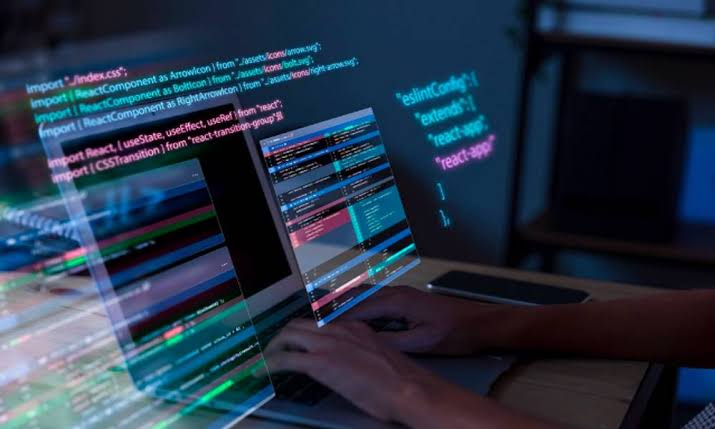
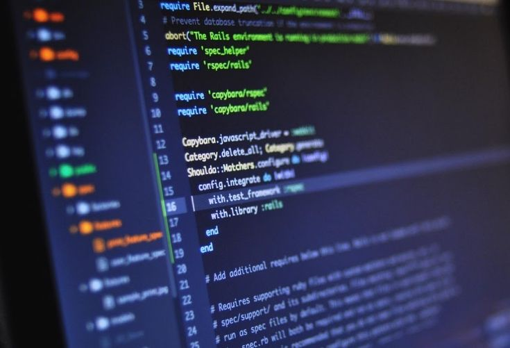

Teknik Komputer dan Informatika
Pelajari cara merancang, mengembangkan, dan mengelola sistem komputer serta teknologi informasi bersama dosen praktisi dan fasilitas lab lengkap.
Apa itu Teknik Komputer dan Informatika?
Jurusan Teknik Informatika dan Komputer merupakan salah satu bidang ilmu yang mempelajari tentang bagaimana cara menggunakan teknologi komputer secara maksimal guna menangani berbagai masalah transformasi ataupun pengolahan data dengan proses logika. Di jurusan ini, kamu akan belajar tentang berbagai prinsip terkait dengan ilmu komputer, mulai dari proses perancangan, pengembangan, pengujian, sampai evaluasi sistem operasi perangkat lunak. Selama masa perkuliahan, kamu akan banyak mengkaji pemrograman dan juga komputasi, dan dibekali dengan keterampilan merancang software atau perangkat lunak.

Tentang Jurusan

Program studi Teknik Komputer dan Informatika bertujuan untuk menghasilkan lulusan yang mampu merancang, mengembangkan, dan mengelola sistem komputer serta teknologi informasi.
Keunggulan Program Studi
Kurikulum Terkini
Materi selalu diperbarui mengikuti perkembangan teknologi industri.
Dosen Praktisi
Diajar oleh pengajar yang juga aktif bekerja di industri teknologi.
Fasilitas Lab
Laboratorium komputer lengkap untuk praktikum setiap minggu.
Peluang Magang
Kerja sama dengan berbagai perusahaan teknologi untuk program magang.
Contact
Untuk informasi lebih lanjut, silakan hubungi kami di:
- email : info@prodi-tk.informatika.ac.id
- telp : 0811 2222 3333